Candidate List 20260623 Previous Day Next Day Section 1: New Sources (age<1d) Cosmological Afterglow
Section 2: Old (1-5d) sources observed last night placeholder
Section 1: New Afterglow/FBOT Cands Last Night (0)
Section 2: Older Sources Observed Last Night (5)
0. ZTF26abcxhgo (Afterglow?) [Back to Top] [Share] [Trigger Swift] [Fritz ] [Lasair ]RA, Dec: 310.43933, 4.26296 20h41m45.44s, 4d15m46.64sGalactic (l, b): 50.31326, -22.14894 ext(g-r) = 0.122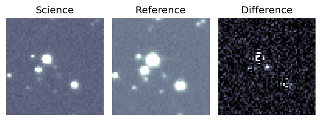
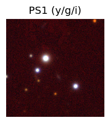
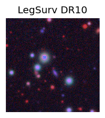
LegacySurvey: 1 sources in 3 arcsec Closest: d = 2.33 arcsec, 196.5 deg (east of north) photoz=0.85 (68% bounds 0.76, 0.98), type=REX peak abs mag = -23.67 (68% bounds -23.35, -24.03) 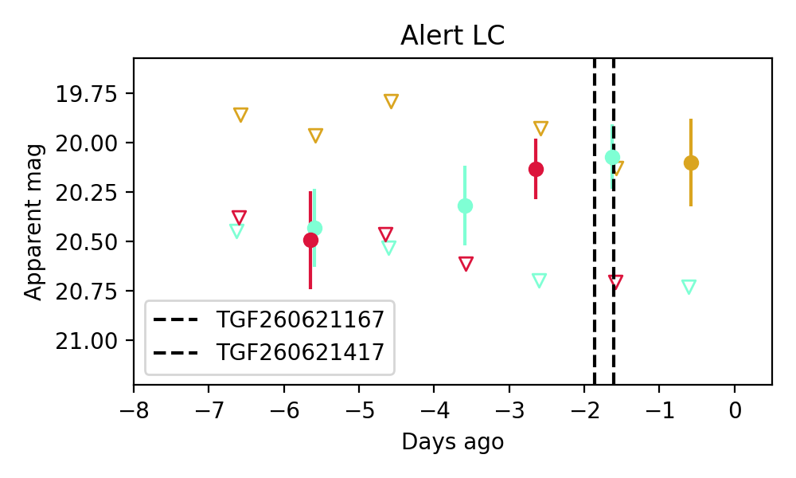
1. ZTF26abdbeqv (FBOT?) [Back to Top] [Share] [Trigger Swift] [Fritz ] [Lasair ]RA, Dec: 281.32662, 49.88347 18h45m18.39s, 49d53m0.50sGalactic (l, b): 79.1775, 21.34896 ext(g-r) = 0.051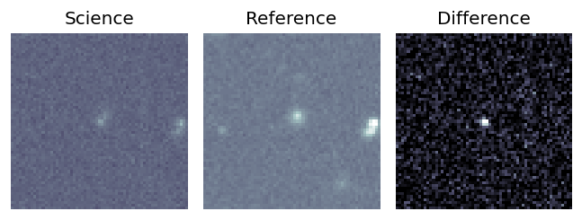
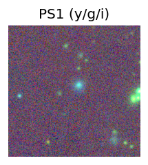
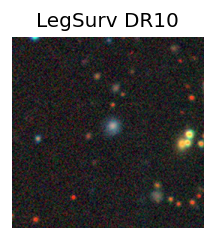
LegacySurvey: 1 sources in 3 arcsec Closest: d = 0.61 arcsec, 179.6 deg (east of north) photoz=0.71 (68% bounds 0.25, 1.04), type=REX peak abs mag = -23.52 (68% bounds -20.81, -24.54) 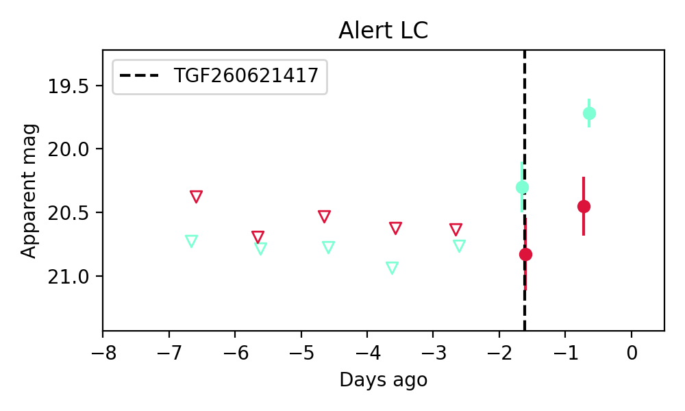
2. ZTF26abdbeqv (FBOT?) [Back to Top] [Share] [Trigger Swift] [Fritz ] [Lasair ]RA, Dec: 281.32662, 49.88347 18h45m18.39s, 49d53m0.50sGalactic (l, b): 79.1775, 21.34896 ext(g-r) = 0.051LegacySurvey: 1 sources in 3 arcsec Closest: d = 0.61 arcsec, 179.6 deg (east of north) photoz=0.71 (68% bounds 0.25, 1.04), type=REX peak abs mag = -23.52 (68% bounds -20.81, -24.54)
3. ZTF26abdgdtq (FBOT?) [Back to Top] [Share] [Trigger Swift] [Fritz ] [Lasair ]RA, Dec: 269.13506, 41.68859 17h56m32.41s, 41d41m18.94sGalactic (l, b): 68.09916, 27.44832 ext(g-r) = 0.035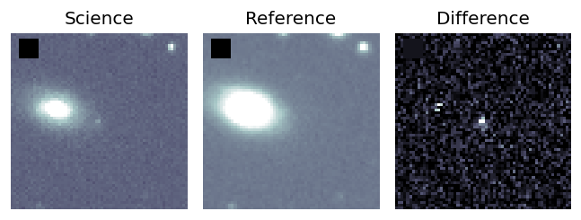
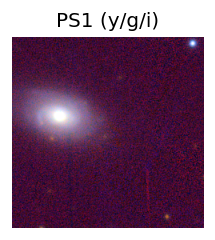
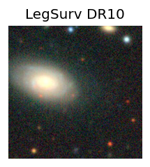
LegacySurvey: 1 sources in 3 arcsec Closest: d = 2.21 arcsec, 148.5 deg (east of north) photoz=0.55 (68% bounds 0.38, 0.81), type=PSF peak abs mag = -22.49 (68% bounds -21.55, -23.49) 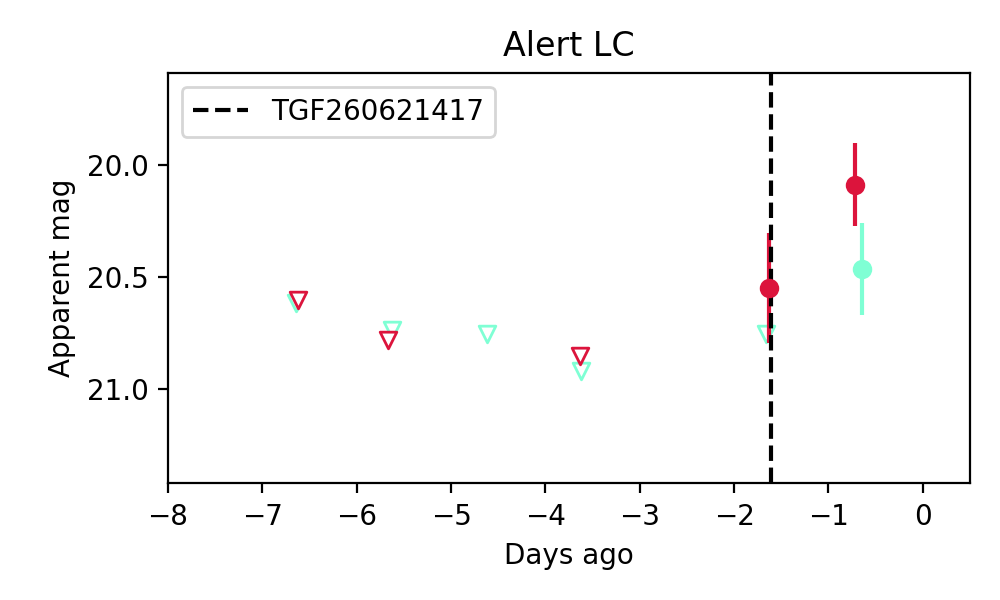
Consistent with synchrotron, g-r>0!
4. ZTF26abdheun (FBOT?) [Back to Top] [Share] [Trigger Swift] [Fritz ] [Lasair ]RA, Dec: 334.61898, 4.10001 22h18m28.56s, 4d 6m0.03sGalactic (l, b): 67.21332, -41.65344 ext(g-r) = 0.111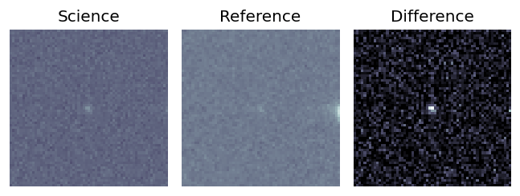
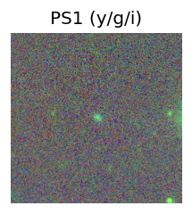
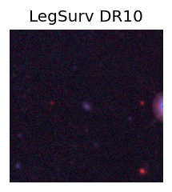
peak abs mag = -17.44 LegacySurvey: 1 sources in 3 arcsec Closest: d = 0.66 arcsec, 210.1 deg (east of north) photoz=0.24 (68% bounds 0.18, 0.39), type=EXP peak abs mag = -20.1 (68% bounds -19.49, -21.32) 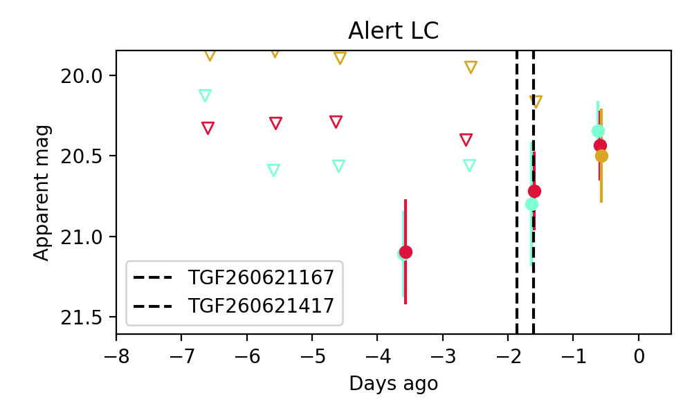
Consistent with synchrotron, g-r>0!